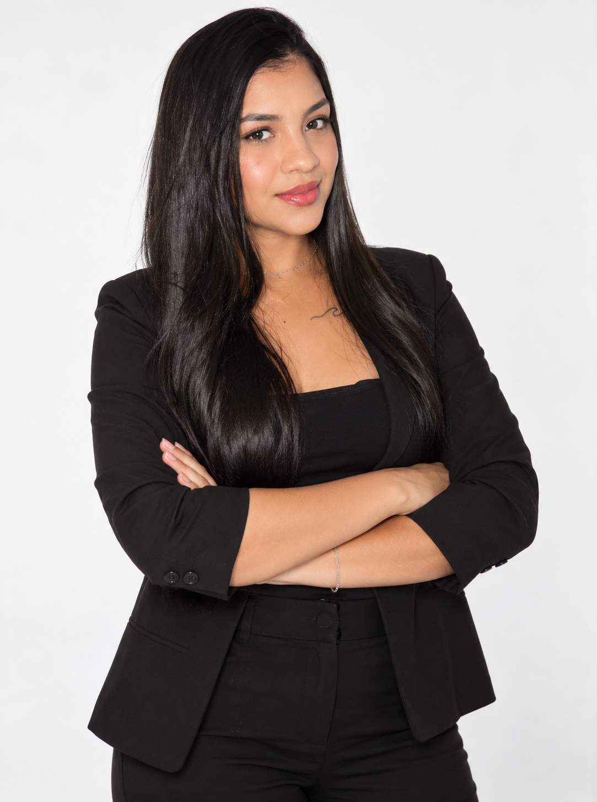
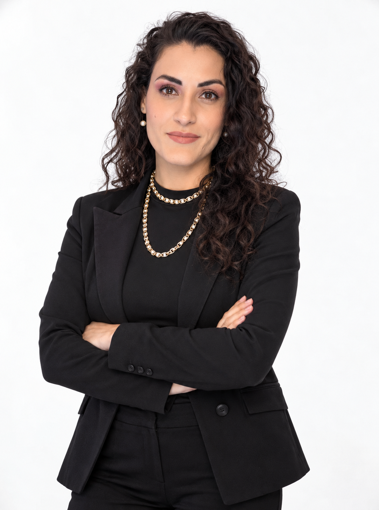
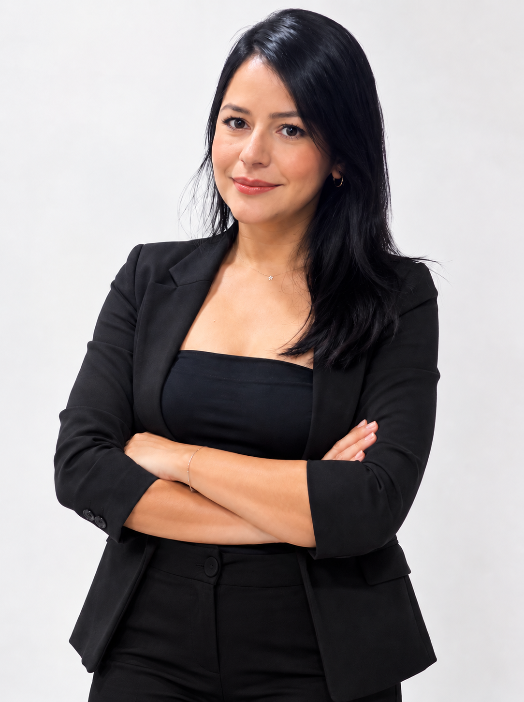

O Autêntico nasceu como projeto da disciplina de Laboratório de Inovação IV, do curso de Análise e Desenvolvimento de Sistemas, sob orientação da professora Maristela Oliveira, na Faculdade Senac DF.

Cicera Taysa de Freitas Batista

Vanessa Sousa da Silva

Verônica Alves
A ideia para este projeto surgiu de uma situação real vivida em sala de aula: um aluno autista de outra turma veio até a nossa para pedir silêncio, e esse momento gerou uma conversa importante com nossa professora sobre neurodivergência e diagnóstico tardio.
Essa conversa nos fez perceber o quanto o tema do diagnóstico tardio ainda é pouco discutido, mesmo dentro do ambiente acadêmico, e o quanto falta informação acessível e espaços de acolhimento para quem vive essa realidade. O Autêntico é a forma que encontramos, como grupo, de transformar essa reflexão em algo útil.